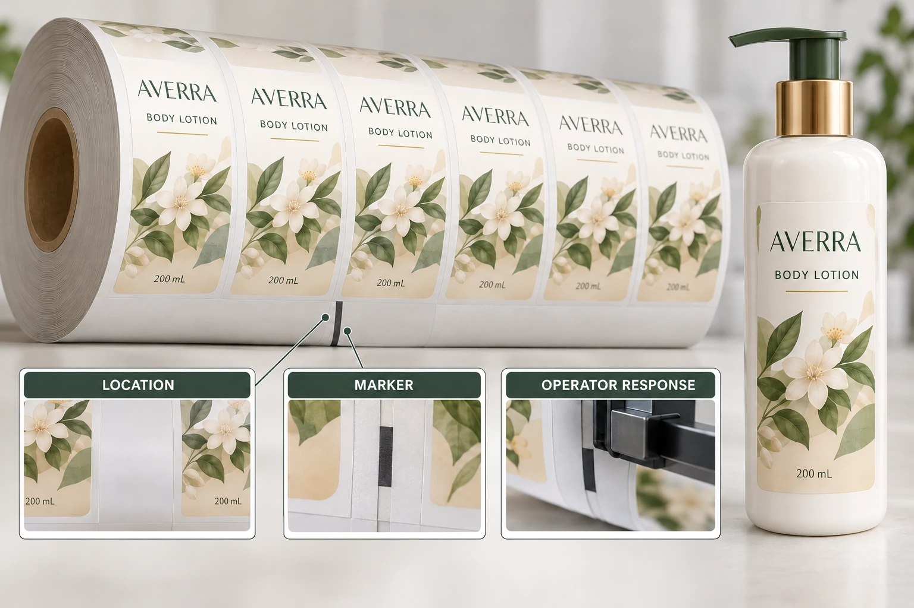

Start by asking whether a splice is allowed
Do not assume the answer from an older purchase order or a different filling site. The relevant operation may permit a specified arrangement, require a different supply or need additional review. Ask the actual line owner for the current requirement.
The printer should confirm whether the requested arrangement is feasible for the proposed job and how it affects supply and quotation. If a requirement has not been acknowledged, record it as an open condition rather than assuming it is included in an accepted unit price.
The roll handoff guide includes splices among the questions to agree. This article develops the exception protocol: permitted construction, identification, operating response and stock reconciliation. Those fields should refer to the same dated roll specification.
Define identification separately from the join itself
The physical join and its identification are different instructions. Ask how the operator should recognize the location and whether the supplied roll or carton record must indicate it in advance. Any marker arrangement needs approval for the installed operation.
Avoid inventing a standard tape color, marker position or number of joins. A visible marker can itself affect handling if placed somewhere the system does not support. The equipment owner and converter should agree what the actual proposal requires.
Keep the relevant job, artwork, roll reference and available location record together. If a roll changes during an authorized finishing correction, update its associated information rather than leaving the original map attached to a different physical supply.
Agree the line response before the event
The receiving team should determine its safe operating response under the site's procedures. This guide does not instruct an operator to run through a splice, stop a moving web by hand or override a sensor. It asks procurement to obtain the supported response before the roll enters production.
Clarify who records affected material and how any unusable section is handled. If labels are removed around a join, distinguish that event from the normal gap between labels. Do not automatically count every removed position as a usable printed label.
Also keep delivery variance separate from operational consumption. The order-quantity tolerance guide covers the agreed supply quantity. A splice protocol should explain its own count treatment without silently redefining those commercial terms.
Build a splice handoff record
Use this worksheet with the actual supplier and operator instructions. It is not a universal converting specification.
| Field | Agreement to obtain | Why it matters |
|---|---|---|
| Receiving operation | Site, line and current roll specification | Prevents using another site's permission |
| Permission | Whether joins are allowed and under what stated conditions | Defines the actual exception |
| Join arrangement | Converter proposal acknowledged by operator | Connects manufacture and use |
| Identification | Approved marker and roll/location record | Makes the exception discoverable |
| Operating response | Authorized procedure and responsible role | Avoids improvisation at the line |
| Quantity treatment | Defined usable stock and reconciliation route | Keeps the order balance interpretable |
| Shipment record | Roll IDs and outstanding exceptions | Preserves the handoff through delivery |
Begin with permission and physical arrangement. Then agree identification, operating response and the quantity treatment. Have the printer acknowledge the complete requirements before accepting the production handoff.
If the converter and operator describe different arrangements, keep the splice requirement pending. Ask them to reconcile the specific difference. A verbal statement that the equipment usually handles labels is not a substitute for that agreement.

Choose a proportionate route for the actual order
A hypothetical hand-application job may have a manageable process for identifying and excluding a short affected section. It should still have an agreed count and a clear roll reference, but the operating task differs from an automated run.
A scheduled machine application can require a more specific protocol or a different supply arrangement. The buyer should compare the actual supplier proposal and receiving requirements, not assume the fewest rolls or cheapest quoted format is automatically the least disruptive option.
If the requirement cannot be supported, ask which alternative the parties can acknowledge. That might change roll preparation, the receiving process or the proposed production route. Record the agreed answer rather than treating an exception as somebody else's problem after delivery.
For custom cosmetic labels, provide artwork, label size, quantity per design and the receiving site's current roll instructions. Mark the splice permission, identification and response questions that remain open. Use the inquiry form to prepare a message, then send the specification by email or WhatsApp. The next useful document is an acknowledged handoff, not a generic guarantee of uninterrupted running.